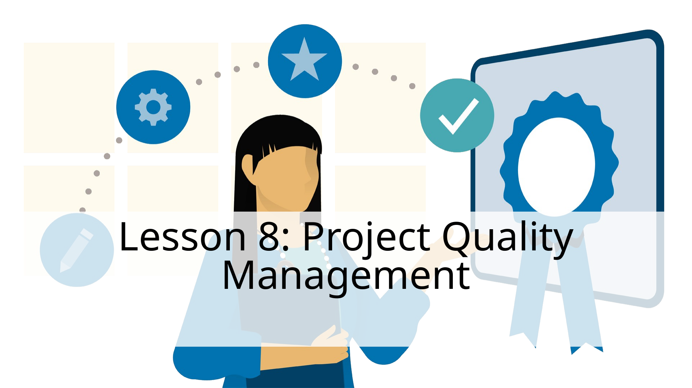
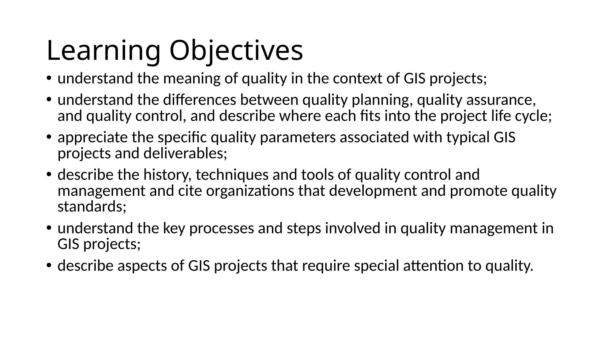
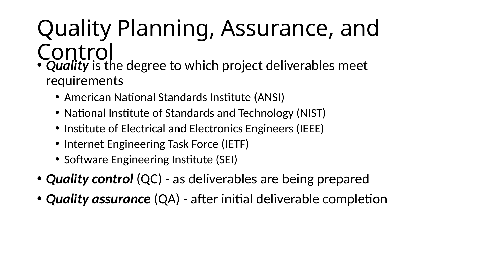
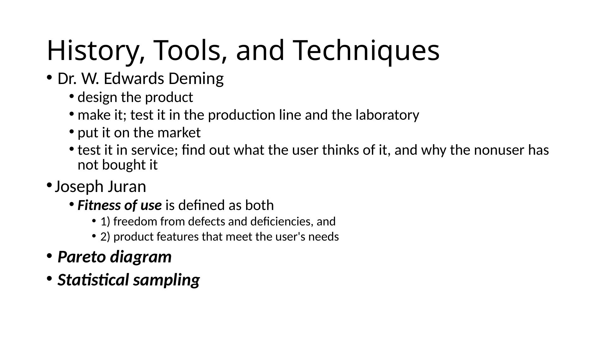
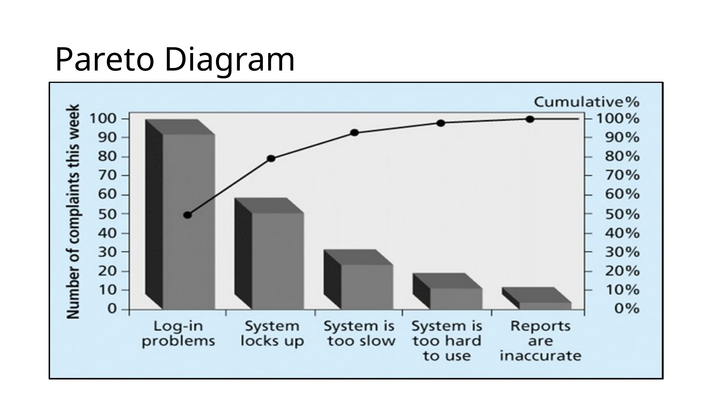
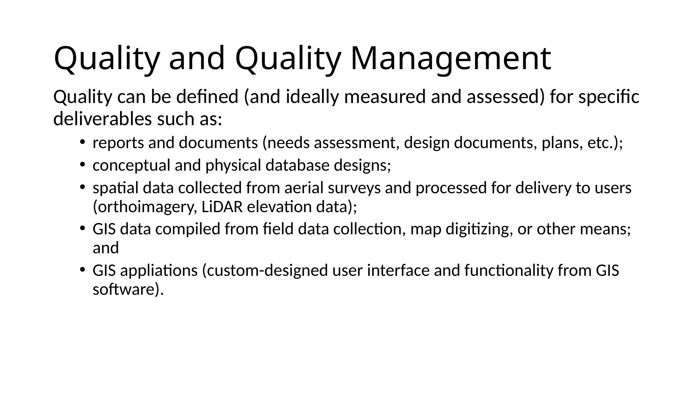
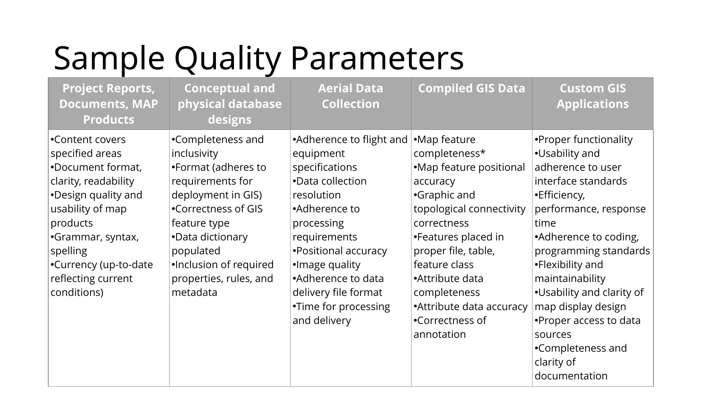
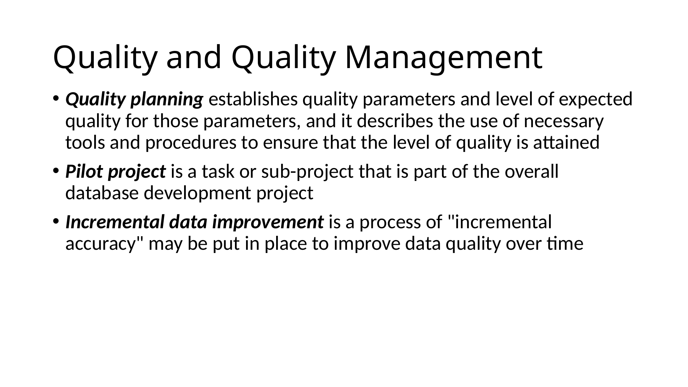
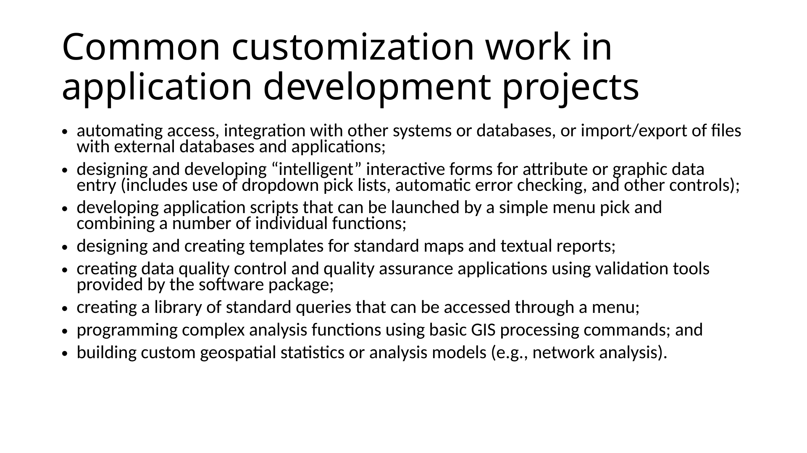
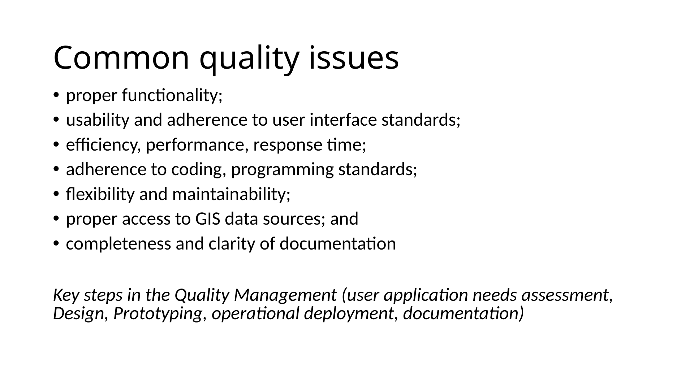

Slide text
Speaker notes / extracted notes
Show slide thumbnails

1. Lesson 8: Project Quality Management
2. Learning Objectives
3. Assignment Schedule
4. Next Assignment-Quality Management Plan
5. Quality Planning, Assurance, and Control
6. History, Tools, and Techniques
7. Pareto Diagram
8. Quality and Quality Management
9. Sample Quality Parameters
10. Quality and Quality Management